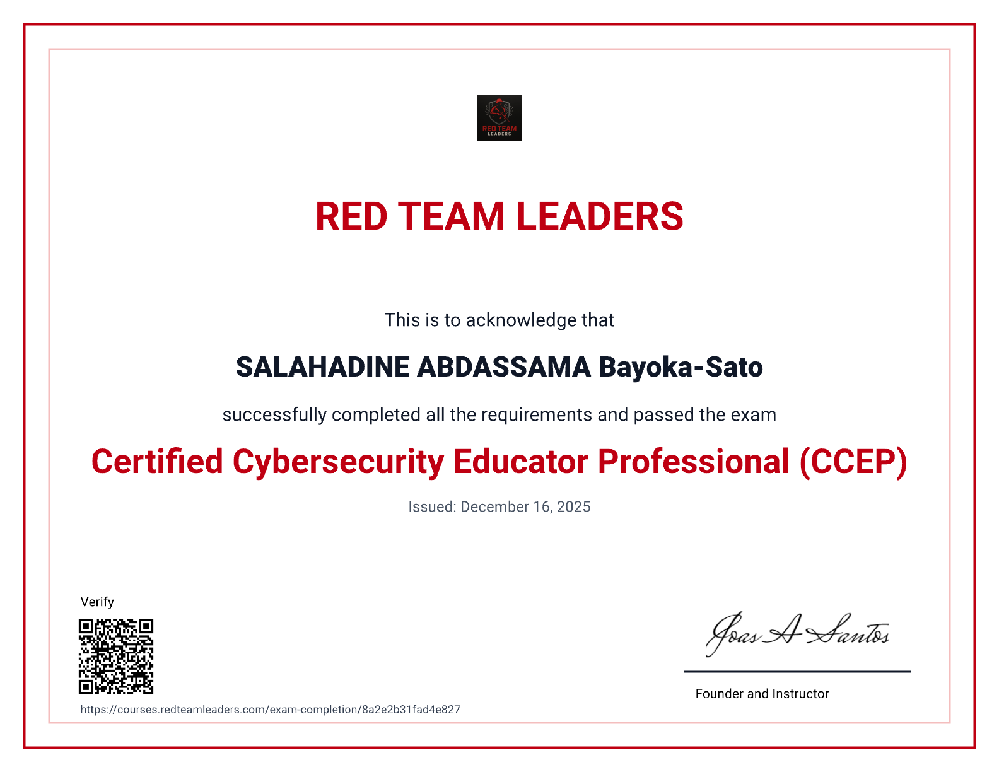
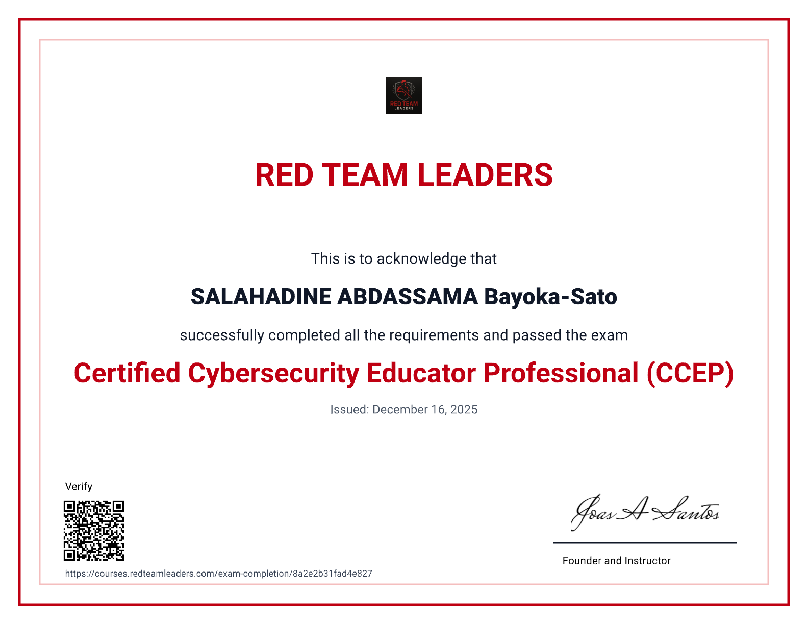
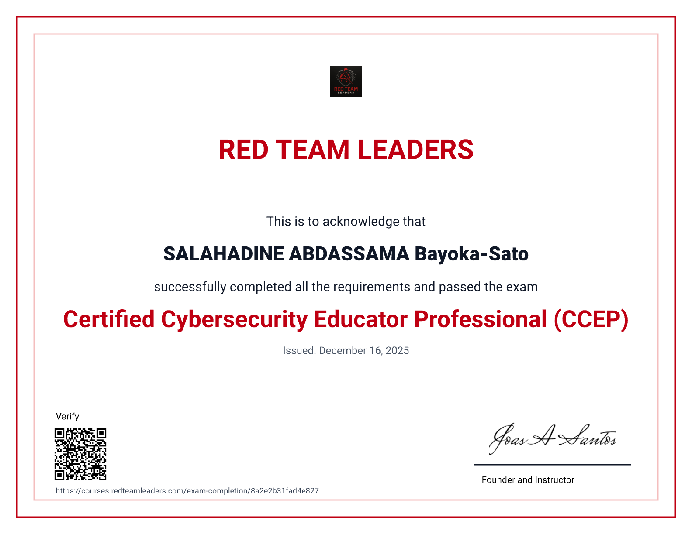
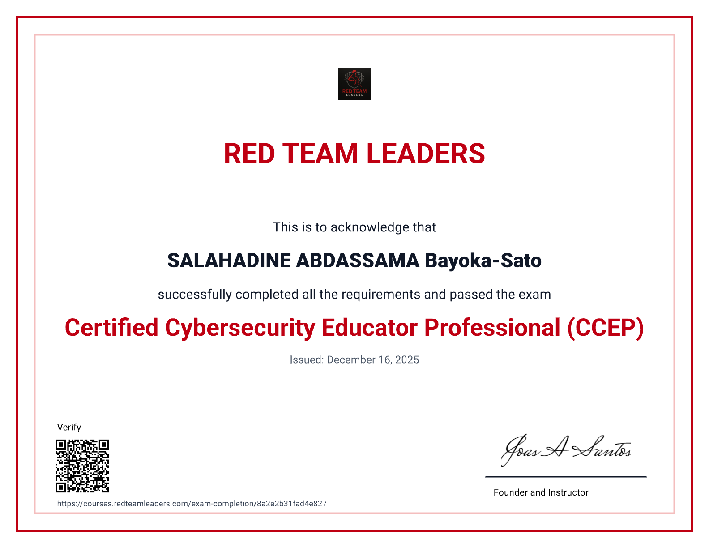

Analyse d’incidents · Sécurité réseau · Détection des menaces · SIEM
Analyste de sécurité informatique
Spécialisé en cybersécurité, analyse des risques, sécurité réseau et réponse à incident.


 


